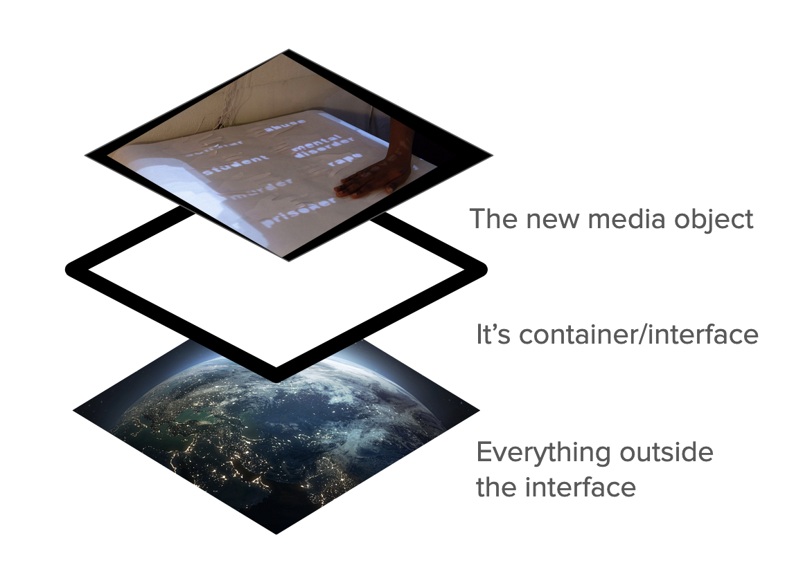

The class project for the Spring 2024 iteration of Interrogating Computational Approaches To Art at the School for Poetic Computation involved co-annotating Amiri Baraka's Technology & Ethos on a glitched version of Google Docs.
The three prisms represent my proposed framework for interrogating computational art work: examining it first on the level of the artifact, and the decisions made by the creator, then examining the interface and the technology the work is built upon or accessed through (headset, phone, projection), then lastly on the societal level, considering the historical and social contexts that inform both the creation and reception of the work.
The glitched google docs browser extension was created by a learner in the class, Nimrod Astarhan and the teacher, Omayeli Arenyeka